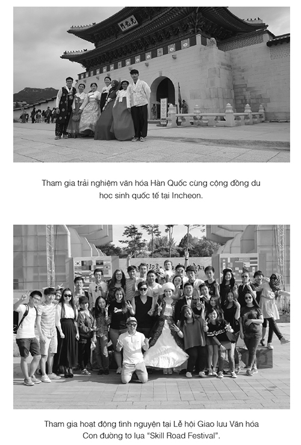
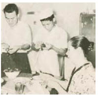
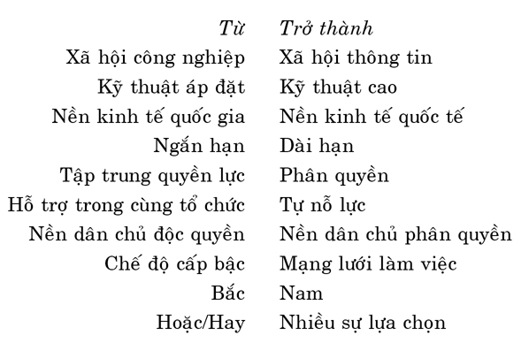

KẾ HOẠCH 4
Người không thể tuân thủ kế hoạch thường kêu ca:
“Tôi chẳng có thời gian, tôi bận lắm!”
Nếu bạn không biết bắt đầu từ đâu,
hãy liệt kê ra thứ tự ưu tiên các việc cần làm
Hoàn thành từng việc theo thứ tự đã sắp xếp,
chắc chắn bạn sẽ thực hiện được kế hoạch.

Cẩm nang phép thuật thực hiện kế hoạch
Hãy xây dựng kế hoạch mà bạn có thể thực hiện. Trước tiên cần xác định rõ mục tiêu cuối cùng của bạn, sau đó đưa ra những bước cụ thể để thực hiện mục tiêu, chính là những việc cần phải làm.

Ngày 25 tháng 5 năm 1988
Bố dượng nhàn nhã
Từ khi mẹ lấy dượng đến nay, cuộc sống của mình đã thay đổi rất nhiều. Ấn tượng đầu tiên của mình dành cho dượng không tốt cũng chẳng xấu, bởi vì mình cảm thấy ông rất xa lạ, nhưng hiện giờ vị trí của ông trong lòng mình đã đổi khác.
Tuy mẹ là một công nhân bình thường, nhưng công việc rất bận, phải làm thêm nhiều, nên buổi tối mình thường phải ăn cơm một mình, ở nhà một mình.
Nhưng sau khi mẹ và dượng kết hôn, mẹ thường về nhà nấu cơm, sau đó cả nhà cùng ngồi quây quần bên mâm cơm.
Mẹ nói dượng là kế toán thuế, công việc bận bịu lắm.
Nhưng theo mình, dượng không phải là người bận rộn đến thế. Ông thường mỉm cười, đi lại trong nhà với dáng vẻ nhàn nhã.
Lúc đầu mình còn cho rằng mẹ nói dối, nhưng thực ra mẹ nói không sai. Công việc của dượng đúng là rất bận, nhưng ông vẫn luôn vui vẻ xử lý mọi công việc. Mình bỗng thấy vô cùng tò mò với cách làm việc này của dượng.
Ngày 1 tháng 6 năm 1988
Xây dựng kế hoạch dựa vào thời gian là cách làm sai lầm
Mình luôn cho rằng bước đầu tiên của việc xây dựng kế hoạch là vẽ ra một vòng tròn, cũng chính là xây dựng kế hoạch dựa vào 24 tiếng đồng hồ của một ngày.
Mỗi tuần mình đều xây dựng một bản kế hoạch cho sinh hoạt. Trước tiên vẽ một vòng tròn thật lớn, sau đó chia thành từng khoảng thời gian xác định, mỗi khoảng thời gian đó viết một công việc cần hoàn thành, cuối cùng dán bản kế hoạch đã xây dựng xong lên tường cạnh bàn học. 5 giờ đến 6 giờ chiều học toán, 6 giờ đến 7 giờ học ngữ văn, 7 giờ đến 8 giờ ăn tối, luyện tập thể thao, 8 giờ đến 9 giờ viết nhật ký... nhưng chưa lần nào mình tuân thủ được cả.
Sau khi nhìn thấy nó trong phòng ngủ của mình, dượng nói: "Mục đích của bản kế hoạch này không phải là để thực hiện mục tiêu mà chỉ để trang trí. Dù có nhiều việc hơn nữa thì cũng vô tác dụng, bản kế hoạch không thể thực hiện được thì không phải là bản kế hoạch thực sự."
Lúc đầu, mình không hiểu ý nghĩa lời dượng nói, bởi vì bản kế hoạch của các bạn khác cũng giống y như của mình, hơn nữa giáo viên ở trường cũng không hề phê bình bản kế hoạch kiểu này.
Dượng liền giải thích tỉ mỉ: "Phần lớn mọi người đều căn cứ vào thời gian để xây dựng kế hoạch, nhưng cách làm này không phải là lựa chọn tốt nhất. Xây dựng kế hoạch không phải là để thực hiện mục tiêu sao? Nhưng khi căn cứ vào thời gian để xây dựng, thì dù chưa thực hiện được mục tiêu trước mắt, chúng ta cũng vẫn phải bỏ qua nó để thực hiện mục tiêu tiếp theo, cách làm này không khoa học chút nào."
Mình cảm thấy dượng nói rất có lý.
Dượng nói ngày mai sẽ cùng mình xây dựng một bản kế hoạch phép thuật. Mình mong thật nhanh đến ngày mai để xem phép thuật của dượng là gì.
Ngày 2 tháng 6 năm 1988
Xây dựng bản kế hoạch phép thuật
Lúc ăn tối, dượng bỗng hỏi mình: "Con có cho rằng thức ăn nấu càng lâu thì mùi vị càng ngon không?"
Mình lắc đầu. Dượng lại hỏi tiếp: "Vậy con có cho rằng xem sách càng lâu càng học được nhiều điều không?"
Mình lại lắc đầu một lần nữa, mình nghĩ câu hỏi này rất đơn giản. Dượng lại tiếp tục nói:
"Trọng điểm của kế hoạch không phải là thời gian, mà là những việc cần làm. Tuy có thể thời gian và địa điểm học của từng học sinh là như nhau, nhưng thành tích học tập vẫn khác nhau. Tốt nhất không nên căn cứ vào thời gian để xây dựng bản kế hoạch, tỷ lệ thành công của cách này rất thấp."
Sau đó, dượng lấy ra một quyển sổ ghi chép, mình nhận thấy bản kế hoạch của ông là dựa vào mục tiêu để xây dựng.
Bản kế hoạch mục tiêu là bản kế hoạch lấy mục tiêu làm trọng điểm: 5 giờ chiều giải hai trang bài tập toán, 6 giờ chiều học thuộc một đoạn văn hay, 8 giờ tối viết nhật ký...
Mình quyết định dựa theo cách của dượng để xây dựng lại bản kế hoạch.
Theo đó, thời gian học của một ngày là năm tiếng, còn hơn là dự định sẽ học từ mấy giờ đến mấy giờ. Căn cứ vào số lượng công việc phải hoàn thành để xây dựng bản kế hoạch, tại sao trước đây mình không nghĩ ra cách này nhỉ? Liệu xây dựng kế hoạch dựa vào mục tiêu sẽ tạo ra phép thuật để giúp mình thành công không?
Ngày 3 tháng 6 năm 1988
Thay đổi tâm lý
Trước đây mình thường xuyên từ bỏ kế hoạch, nên mình lo lắng lắm. Mình chưa bao giờ thật sự hoàn thành một việc nào cả, mình luôn cảm thấy tâm lý không được tốt.
"Rõ ràng biết mình sẽ thất bại, vậy tại sao còn phải làm? Như thế chỉ lãng phí thời gian. Mình nhất định sẽ thất bại! Mình vốn là người lười biếng, lôi thôi mà!" Những câu này giống như con ác quỷ cứ lượn lờ bên tai mình.
Mình thẳng thắn nói với dượng lo lắng đó. Dượng nghe xong, mỉm cười bảo: "Từ bỏ việc thực hiện kế hoạch đều có nguyên nhân cả, đó là do con xây dựng kế hoạch chưa tốt. Chỉ cần kế hoạch của con xây dựng hợp lý, quy củ thì con nhất định có thể thực hiện được kế hoạch. Trước tiên phải loại bỏ tâm lý tiêu cực, biến chúng thành tâm lý tích cực, đợi khi con tự tin, tự nhiên con sẽ nói với bản thân mình những câu nói đại loại như: Mình có thể làm được, Mình làm được..."
Nếu mình có thể giống như dượng, thực hiện được kế hoạch mà mình đặt ra thì thật là tuyệt. Mong rằng sẽ xuất hiện kỳ tích đó.
Ngày 4 tháng 6 năm 1988
Cách xây dựng kế hoạch dựa vào mục tiêu 1
Ki Ho, dượng muốn nói với con vài điều nên đã tự tiện viết vào cuốn sổ này của con.
Con biết làm thế nào để xây dựng một bản kế hoạch có hiệu quả không? Hơn nữa phải xây dựng như thế nào mới không khiến con từ bỏ việc thực hiện mà ngược lại còn buộc con phải tuân thủ kế hoạch đó? Nếu con muốn biết, thì hãy thử làm theo lời dượng nhé!
Hãy xây dựng một kế hoạch mà con có thể thực hiện. Trước tiên cần xác định rõ mục tiêu cuối cùng của con, sau đó đưa ra những bước đi cụ thể để thực hiện mục tiêu, chính là những việc cần phải làm.
Mọi người thường xây dựng kế hoạch một cách mù quáng, ví dụ: "Tôi cần cố gắng học tiếng Anh", "Tôi phải kiếm tiền"... Tuy nhiên, bản kế hoạch xây dựng dựa vào mục tiêu lại không phải như vậy. Trọng điểm của bản kế hoạch xây dựng dựa trên mục tiêu không phải là chỉ nói "Tôi cần cố gắng học tiếng Anh", mà phải suy nghĩ "Làm thế nào để học tốt tiếng Anh?"
Vậy, rốt cuộc làm thế nào để xây dựng bản kế hoạch học tiếng Anh? Ví dụ: mỗi ngày học thuộc mười từ đơn, mỗi ngày đọc một câu chuyện bằng tiếng Anh trong khoảng 30 phút... Dượng nghĩ con cần xây dựng kế hoạch cụ thể như vậy.
Con nên nhớ, trọng điểm của việc xây dựng kế hoạch là xác định rõ ràng mục tiêu và phương pháp cụ thể để thực hiện được mục tiêu.
Cuối cùng dượng có một mong muốn, sau này con hãy gọi ta là bố, có được không?
Ngày 15 tháng 6 năm 1988
Cách xây dựng kế hoạch dựa vào mục tiêu 2
Mình nghe theo lời bố, xây dựng lại một bản kế hoạch, nhưng làm vẫn chưa tốt, nên mình rất thất vọng về bản thân. Mình cảm thấy có thể là do mình không đủ thông minh, hơn nữa lại thiếu kiên trì.
Nhưng bố vẫn nói là do mình chưa xây dựng thành công bản kế hoạch.
Bố nói, nhìn bên ngoài bản kế hoạch của mình xây dựng có vẻ rất hoàn mỹ, nhưng mục tiêu đích thực lại quá xa vời, quá lớn, không thực tế. Bố nói, nếu sống theo bản kế hoạch này, thì chỉ chưa đầy hai ngày là con sẽ bỏ cuộc.
Bố nói rất đúng, mình quả thực chỉ kiên trì được có hai ngày thôi.
Bố nói, kế hoạch không được xây dựng quá khả năng cho phép, bởi vì kế hoạch mà không thực hiện được sẽ ảnh hưởng đến sự tự tin và tính tích cực trong quá trình thực hiện mục tiêu, cho nên thà không lập kế hoạch còn hơn.
Hãy xây dựng một bản kế hoạch có thể thực hiện! Theo lời bố thì quá trình xây dựng có thể chia làm hai giai đoạn:
Giai đoạn thứ nhất
Bản kế hoạch làm tăng sự tự tin không phải là một gánh nặng làm người ta cảm thấy khó khăn và mệt mỏi, đó phải là bản kế hoạch mà bản thân có thể hoàn thành một cách thoải mái không cần người khác giúp đỡ. Ví dụ, bắt đầu từ hôm nay mỗi ngày nhảy dây 10 phút, mỗi sáng trên đường đến trường sẽ học thuộc một câu thành ngữ. Kế hoạch ở mức độ này có thể xem là khá dễ thực hiện, con hãy kiên trì trong một tuần. Sau khi dần dần hình thành thói quen như vậy, con sẽ tự tin "Mình cũng có thể thực hiện kế hoạch."
Giai đoạn thứ hai
Tiếp theo là nâng cao mục tiêu hơn một chút, mỗi ngày nhảy dây 15 phút, mỗi ngày học thuộc hai câu thành ngữ. Hãy ghi nhớ: tuyệt đối không được nâng mục tiêu lên mức quá cao, quá khoa trương, nên dừng ở một mức độ nhất định. Sau đó thực hiện dần dần mục tiêu này để hình thành thói quen, đến khi hoàn toàn thực hiện được kế hoạch này, con mới tiếp tục nâng cao mục tiêu.
Phép thuật của bố là từng bước từng bước thực hiện kế hoạch giống như việc đi lên cầu thang.
Ngày 16 tháng 6 năm 1988
Cách sử dụng thời gian hợp lý
Hôm nay bố dạy mình cách làm thế nào để sử dụng thời gian hợp lý.
Sự khác biệt lớn nhất giữa người thành công và kẻ thất bại chính là việc sử dụng thời gian sao cho hợp lý nhất. Chỉ cần tận dụng hiệu quả thời gian, thì dù kế hoạch có khó hơn nữa bạn cũng không cần phải vội vàng mà vẫn hoàn thành tốt mục tiêu.
Dù bạn là người thành công hay kẻ thất bại, thời gian một ngày của mỗi người đều chỉ có 24 tiếng. Dù bạn thông minh thế nào, chăm chỉ bao nhiêu, thời gian một ngày của bạn vẫn chỉ có 24 tiếng. Thời gian công bằng với tất cả mọi người, một ngày luôn chỉ có 24 tiếng.
Nhưng trong cùng một khoảng thời gian, có người cứ ung dung thực hiện kế hoạch, còn có người lại bị thời gian và kế hoạch mà mình đã cố công xây dựng nên truy đuổi. Người bị thời gian truy đuổi là người không biết cách sử dụng thời gian, họ thường lấy lý do là thời gian không đủ hoặc không có thời gian.
Khi bố nói đến đây, mình bỗng cảm thấy xấu hổ lắm, bởi vì trước đây mình là người như thế.
Bố còn nói, nếu muốn sử dụng thời gian hiệu quả, con hãy xây dựng một bản kế hoạch có thể thực hiện được. Như vậy không chỉ làm con hiểu được tính quan trọng của thời gian, mà còn làm cho cuộc sống của bản thân có ý nghĩa hơn. Kế hoạch sẽ giúp con có được nhiều thời gian hữu ích hơn người khác.
Ngày 1 tháng 10 năm 1988
Thời gian có phép thuật
Đã lâu rồi mình không viết nhật ký.
Trong khoảng thời gian này, mình thật sự đã có nhiều thay đổi. Thời gian nghỉ hè, mình làm theo cách mà bố nói, tuy chỉ có hai tháng thôi, nhưng mình đã thay đổi nhiều lắm, tất cả đều phải cảm ơn phép thuật của bố.
Trước đây mình cảm thấy việc học tập rất nhàm chán, chẳng có chút hứng thú nào với trường lớp cả. Nhưng sau khi bố dạy mình cách xây dựng kế hoạch làm mình bỗng thích học, thích đến trường. Bản kế hoạch này quả thật là màu nhiệm.
Điều làm mình vui nhất là có thể trở thành thành viên của đài phát thanh trường. Mỗi hoạt động của đài phát thanh đều làm mình phấn khởi và vui vẻ.
Và dường như ước mơ của mình càng trở nên rõ ràng hơn. Đó là được trở thành người dẫn chương trình.
Mình muốn trở thành một người dẫn chương trình xuất sắc, người dẫn chương trình nổi tiếng, vừa đưa tin nhanh vừa chính xác, mọi người sẽ nắm bắt được tình hình thế giới thông qua nội dung bản tin của mình.
Nếu muốn thực hiện mơ ước đó, mình rất cần sự trợ giúp của kế hoạch. Mình phải từ từ và cẩn thận như đi cầu thang vậy, từng bước từng bước tiến đến bậc cao nhất để đạt được ước mơ.
Đọc đến đây, Bong Hee chợt thở phào, như thể trút được một gánh nặng.
Cô bé nhận ra “Cẩm nang phép thuật thực hiện kế hoạch” giống như chiếc chìa khóa mở cánh cửa tâm hồn, giúp bản thân hiểu ra nhiều điều.
Bong Hee bỗng cảm thấy tinh thần thật thoải mái, bởi vì dường như con đường trước mắt cô bé đã trở nên rõ ràng hơn rất nhiều.
Bong Hee không thể thực hiện kế hoạch không phải vì cô bé không thông minh bằng người khác hoặc thiếu kiên nhẫn, mà vì cách xây dựng kế hoạch và cách thực hiện kế hoạch đều chưa hợp lý.
Cô gái nhỏ vui lắm, thầm quyết tâm: “Từ hôm nay, mình sẽ từng bước từng bước hướng đến mục tiêu.”
KẾ HOẠCH BÍ MẬT 5
Thư con gái gửi mẹ!
LÀM THẾ NÀO ĐỂ XÂY DỰNG KẾ HOẠCH NÂNG CAO THÀNH TÍCH HỌC TẬP?
Mẹ ơi, hôm nay con đã phát hiện ra một số bí mật.
Trước tiên, điều quan trọng nhất khi xây dựng kế hoạch không phải là thời gian, mà là những việc cần hoàn thành. Cũng có nghĩa con phải xác định lượng bài học cần hoàn thành trong một ngày, sau đó xác định lượng bài học cần phải học của một tuần và một tháng.
Thứ hai, hãy lập kế hoạch với mục tiêu đơn giản. Khi chúng ta nặn người tuyết, việc đầu tiên bao giờ cũng là nặn một quả cầu tuyết to bằng nắm tay, rồi lăn đi lăn lại trên tuyết, cứ làm như vậy quả cầu sẽ lớn dần. Nguyên lý này được dùng làm căn cứ để xây dựng kế hoạch với mục tiêu khá đơn giản, rồi cố gắng thực hiện từ từ từng mục tiêu nhỏ một, nhất định con sẽ thành công.
Thứ ba, không nên đặt ra quá nhiều mục tiêu trong một bản kế hoạch. Bởi vì điều đó sẽ ảnh hưởng đến sự kiên nhẫn và tự tin. Xây dựng ít mục tiêu một
chút, không chỉ giảm bớt gánh nặng tâm lý mà còn nâng cao khả năng tập trung của con.
Mẹ ơi, mẹ hãy chờ xem nhé!
CẨM NANG PHÉP THUẬT THỰC HIỆN KẾ HOẠCH
Khi gặp khó khăn, phần lớn mọi người sẽ chọn cách chạy trốn, nhưng chạy trốn không thể giải quyết vấn đề. Bạn hãy thử nghĩ xem, làm thế nào để đối diện với những khó khăn này bằng thái độ tích cực?
Bản kế hoạch phép thuật
Nhìn bản kế hoạch được bôi đầy màu xanh, Bong Goo tự nhiên cảm thấy thích thú. Cậu bé ước gì có thể chóng bôi xanh tất cả các ô còn lại.
Ngày hôm sau, Bong Hee dán lên tường bản kế hoạch đã kín một trang giấy A4. Cô bé còn viết lên đó năm chữ rõ ràng “Bản kế hoạch phép thuật” và vẽ thêm hai bảng biểu. Bảng bên trái của Bong Hee, bảng bên phải của Bong Goo.
“Đây là cái gì ạ? Chị định sử dụng phép thuật gì với em thế?” Bong Goo tò mò hỏi.
“Đúng như vậy thì sao? Bong Goo, sau này chị em mình sẽ sống theo bản kế hoạch này, biết chưa hả?”
“Sống như thế nào? Em không thích phải đọc sách cả ngày đâu.” Bong Goo dẩu môi, nhíu mày nói với Bong Hee.
“Bản kế hoạch này sẽ giúp em thực hiện mục tiêu. Sau này, chị sẽ không bao giờ xây dựng kiểu kế hoạch mà không thực hiện được, em hãy đợi mà xem.”
Bong Hee làm theo “Cẩm nang phép thuật thực hiện kế hoạch”, cô bé viết mục tiêu của mình lên bản kế hoạch và đương nhiên mục tiêu này khá đơn giản.

Trên đường đến trường học thuộc ba từ tiếng Anh, giờ nghỉ trưa học thuộc hai câu thành ngữ... kiên trì thực hiện trong một tuần. Mục đích là để sử dụng hiệu quả thời gian nhàn rỗi của lúc đi học và giờ nghỉ trưa.
Mục tiêu của Bong Goo còn đơn giản hơn: không vứt đồ đạc lung tung, chơi điện tử dưới hai mươi phút để còn dành thời gian làm bài tập toán.
“Thế này đã được chưa ạ?”
“Chỉ cần em có thể kiên trì được một tháng, chị sẽ mua quà cho em, mua kim cương biến hình mà em thích nhất. Nếu thực hiện thành công, thì dùng một cái bút màu xanh vẽ một hình chữ nhật nhỏ lên bản kế hoạch. Như vậy em có thể nhìn thấy mình có thực hiện được hay không, để nhắc nhở bản thân tiếp tục cố gắng.”
“A, hóa ra là thế! Để tô được nhiều màu xanh, em nhất định sẽ cố gắng thực hiện kế hoạch.” Bong Goo vui vẻ nói.
“Ừ! Chị em mình cùng phấn đấu nhé. Cố gắng không để bị đánh dấu X vì không hoàn thành kế hoạch nhé.”
“Vâng ạ. Nhưng tại sao phải đánh dấu X vào kế hoạch không thực hiện được?”
“Bởi vì dấu X sẽ làm em không vui, làm em cảm thấy buồn, như vậy, em sẽ tự nhủ với bản thân ‘Mình phải cố gắng’. Đúng rồi, hôm nào mà có biểu hiện tốt thì cũng phải đánh dấu vào, em hãy vẽ một ngôi sao thật lớn, cứ như vậy đi nha.”
“Ha ha ha! Nhìn thấy ngôi sao, em sẽ rất vui!” Bong Goo ra chiều thích thú.
“Bong Goo, mới đầu có thể em sẽ cảm thấy rất mệt, nhưng chỉ cần kiên trì để dần hình thành thói quen là sẽ ổn ngay, em hiểu chưa?”
“Em biết rồi, em thấy đó cũng không phải việc khó khăn quá. Mà chị sẽ mua kim cương biến hình cho em thật chứ? Ngoắc tay nào.”
Bong Hee và Bong Goo ngoắc tay cam kết.
Một ngày, hai ngày, ba ngày...
Bong Hee đã tuân thủ kế hoạch được chín ngày, điều kỳ lạ là bây giờ việc làm theo kế hoạch không còn khó khăn nữa, có thể do cô bé bắt đầu từ việc đơn giản nhất, dễ làm nhất.
Bong Hee giống như là bị phép thuật nào đó mê hoặc, thích nghi tốt với cuộc sống có kế hoạch, cô bé cảm thấy bản kế hoạch phép thuật giống như một bộ quần áo vừa vặn, rất hợp với mình.
Thái độ sống, cách làm việc cũng như nghỉ ngơi của Bong Hee đã thay đổi rất nhiều.
Sau khi Bong Hee sinh hoạt theo bản kế hoạch mới thì cô bé không còn đi học muộn, lên lớp cũng không ngủ gà ngủ gật như con gà ốm nữa. Bây giờ, thực hiện theo kế hoạch đã không còn là việc gì khó khăn với Bong Hee và ngày nào không sinh hoạt theo bản kế hoạch, cô bé lại cảm thấy không thoải mái.
Trước khi đi ngủ, Bong Hee nhảy từ trên giường xuống, đi đối chiếu với bản kế hoạch dán trên tường xem hôm nay đã làm được hay quên làm việc gì, sau khi xác định rõ ràng thì cô bé mới yên tâm đi ngủ.
Nhìn bản kế hoạch tô đầy màu xanh, Bong Goo vui lắm, sự tự tin lại càng tăng thêm. Bong Goo muốn nhanh chóng tô hết màu vào những ô còn lại, cậu bé còn vẽ lên bản kế hoạch một ngôi sao to và kim cương biến hình mà mình thích.

Bong Hee mỗi khi có thời gian là giở ngay “Cẩm nang phép thuật thực hiện kế hoạch” ra để đọc. Cô bé cảm thấy mỗi lần đọc đều mang lại cho mình bao cảm nhận khác nhau, cuốn sổ ghi chép cẩn thận quá trình Kim Ki Ho chuyển từ vị trí thứ ba từ dưới lên đến vị trí đứng đầu lớp.
Bong Hee càng ngày càng thấy tò mò về nhân vật Kim Ki Ho. Cô bé còn thường tưởng tượng xem Kim Ki Ho bây giờ đang làm gì: “Chú ấy có thực hiện mơ ước của mình không? Bây giờ chú ấy có phải là người dẫn chương trình nổi tiếng không?”
Bỗng trong đầu Bong Hee nảy ra một ý nghĩ: “Đúng rồi, chưa biết chừng chú ấy là người quen của mẹ. Mẹ là ‘tiền bối’ của đài phát thanh trường mình mà.”
Bong Hee định bụng hỏi mẹ về người đặc biệt này.
Nhìn Bong Hee và Bong Goo bỗng thay đổi như vậy, bố cảm thấy vô cùng ngạc nhiên.

Kế hoạch hợp lý giúp tâm lý thoải mái, vẻ bề ngoài của Bong Hee cũng thay đổi nhiều. Trong phòng làm việc của đài phát thanh, Na Na ngó nhìn bạn: “Bong Hee, mấy ngày nay cậu đánh phấn gì thế?”
“Tớ không dùng gì cả, tớ chỉ rửa mặt thôi, sao vậy?”
“Ôi, mặt cậu hồng hào quá, tớ cứ tưởng cậu bôi cái gì lên mặt.”
Ni Na cũng chen vào: “Thì ra Bong Hee có làn da rất đẹp, tớ vừa mới phát hiện... Cậu khác xa so với trước đây!”
Các anh chị lớp sáu của đài phát thanh cũng thay đổi cách nhìn với cô bé, suy nghĩ “không muốn làm cùng Bong Hee” cũng dần biến mất.
“Các em không có ý tưởng nào sáng tạo hơn hay sao?” Cô giáo nói với các bạn học sinh. “Chúng ta phải xây dựng một tiết mục mới, sáng tạo hơn so với trước. Chúng ta không thể chỉ làm những tiết mục đã quá quen thuộc, mà cần có một hoạt động mới mẻ để các bạn khác cũng có thể tham gia.”
Các bạn nhỏ đều im lặng.
Chị Hye Su ngập ngừng: “Trò chơi ‘Hỏi nhanh þ Đáp gọn’ được không ạ? Chọn năm bạn học sinh trả lời câu hỏi, sau đó phát phần thưởng cho các bạn ấy.”
“Như vậy có khô khan quá không? Trò chơi ‘Hỏi nhanh þ Đáp gọn’ là tiết mục dành cho một số cao thủ cạnh tranh với nhau, nhưng trình độ hiểu biết của các bạn ấy đều ngang nhau, mọi người sẽ cảm thấy nhàm chán, không thú vị. Hơn nữa hàng tháng trường ta đều tổ chức cuộc thi hỏi đáp ‘Chuông vàng’ còn gì? Bản chất của các tiết mục đó khá giống nhau.”
Chị Hye Su để lộ vẻ thất vọng.
Cộc, cộc, cộc!
Cô giáo gõ gõ ngón tay xuống bàn, nhưng không nói câu nào.
“Em...” Bong Hee thận trọng nhìn cô giáo.
“Gì vậy?”
“Thưa cô, ‘Thực hiện kế hoạch’ thì sao ạ?”
“... ‘Thực hiện kế hoạch’ là gì?” Cô giáo hỏi.
“Mọi người đều muốn thực hiện kế hoạch, nhưng rất ít người có thể thực sự hoàn thành kế hoạch, cho nên chúng ta cần xây dựng bản kế hoạch có thể thực hiện được. Em nghĩ, chúng ta nên triển khai một hoạt động để các bạn học sinh có thể công khai bản kế hoạch của mình với thầy cô và bạn bè, như vậy thì mỗi lần gặp nhau, ai cũng có thể hỏi thăm tình hình thực hiện kế hoạch của người kia.”
Chúng mình cùng thực hiện kế hoạch nhé!
“Hoàn thành kế hoạch như thế nào?” Cô giáo vừa gật đầu, vừa nói với các bạn nhỏ: “Ừ, để trả lời câu hỏi của các bạn không công khai bản kế hoạch thì các bạn tham gia hoạt động buộc phải thực hiện bản kế hoạch của mình, bởi nếu không chúng ta sẽ trở thành người không thành thực.”
Bỗng chị Hye Su bĩu môi, nhìn Bong Hee bằng ánh mắt ghen tỵ. Ni Na và Na Na sợ đến mức hai mắt mở to nhìn chị Hye Su.
Cô giáo im lặng, sau khi suy nghĩ một lúc, cô vui vẻ nói: “Ý hay! Cô nghĩ đây là ý tưởng rất hay, không chỉ các bạn học sinh mà các giáo viên cũng có thể tham gia. ‘Tôi muốn trở thành vận động viên chạy ngắn cấp trường đại diện cho trường của chúng ta’, ‘Lớp chúng ta sẽ đoạt giải nhất trong cuộc thi giữ gìn môi trường xanh, sạch, đẹp’..., việc công khai này sẽ giúp cho cả thầy lẫn trò có cảm giác thi đua, cũng làm cho trường chúng ta trở thành ngôi trường có tinh thần tiến bộ. Thật là ý tưởng hay!”
Cô giáo tỏ ra vui mừng, Ni Na và Na Na cũng cảm thấy vô cùng hào hứng. “Tuần sau sẽ bắt đầu luôn, trước tiên phải dán thông báo tuyên truyền về hoạt động này trong toàn trường. À, đúng rồi! Mới đầu có thể sẽ không có ai tham gia, cho nên phải bắt đầu từ các bạn học sinh ở đài chúng ta trước. Còn nữa, có thể tặng cho các bạn tham gia một món quà nho nhỏ như đồ dùng học tập chẳng hạn. Chắc chắn chúng ta sẽ thành công.” Cô giáo nói rồi vui vẻ đứng lên.

“Cô ơi, em...” Anh Hee Jae bỗng giơ tay xin có ý kiến.
“Sao vậy? Em có sáng kiến hả?”
“Không ạ. Chỉ là, ý kiến đề xuất của ai mà được chọn là hoạt động của trường thì người ấy sẽ trở thành người dẫn chương trình của hoạt động đó luôn, đúng không ạ?”
“Đúng vậy, đây là truyền thống từ trước đến nay của đài chúng ta, cũng là cơ hội để thể hiện tính trách nhiệm của mỗi cá nhân. Ý kiến của học sinh nào được chọn làm hoạt động của trường thì học sinh đó sẽ chịu trách nhiệm đến cùng. Các em đồng ý không?”
“Nhưng, Bong Hee chưa có kinh nghiệm gì cô ơi? Em ấy chưa đủ năng lực để đảm nhiệm vai trò của người dẫn chương trình. Hay là lần này hãy để Hye Su dẫn chương trình đi ạ.”
Bây giờ cô giáo mới nghĩ đến vấn đề này.
“Ma Bong Hee, em có đảm nhận được vai trò của người dẫn chương trình không?” Cô giáo nhìn Bong Hee, các bạn khác cũng đổ dồn ánh mắt về phía cô bé, môi chị Hye Su bắt đầu run run.
Có thể vì là “bình chân như vại”, cũng có thể là quá trình thực hiện kế hoạch đã giúp Bong Hee tự tin hơn nên cô bé không hề do dự, trả lời rất tự tin rằng: “Vâng, em làm được ạ!”
Một câu trả lời vô cùng tự tin. Cô giáo vừa chớp mắt vừa nhìn Bong Hee nói: “Tốt, như vậy cũng được. Nhưng một mình em dẫn chương trình thì hơi mạo hiểm, nên em và Hye Su cùng dẫn nhé, như thế sẽ có sự phối hợp ăn ý. Đợi chút, cô còn phải đi hỏi ý kiến của thầy hiệu trưởng. Chúng ta không chỉ tổ chức hoạt động này ở trường mà còn phải mang tiết mục này đến tham gia cuộc thi ‘Phát thanh học sinh tiểu học toàn quốc’ năm nay nữa. Các em thu dọn gọn gàng rồi về đi.”
Cô giáo nói xong thì vội vàng ra khỏi phòng làm việc.
Ai nấy đều tỏ vẻ hoang mang nhìn theo bóng cô, có lẽ vì quyết định của cô quá đột ngột. Anh Hee Jae lên tiếng: “Mọi người đều nghe thấy lời cô giáo rồi phải không? Sau này chúng ta hãy cùng nhau cố gắng nhé. Tuy đây là lần đầu tiên một học sinh lớp năm trở thành người dẫn chương trình nhưng các bạn lớp sáu cũng không nên vì thế mà tỏ thái độ lên mặt, cần nghe theo sự sắp xếp của Bong Hee. Dù thế nào thì Bong Hee cũng là người phụ trách chương trình lần này, mọi người đã nghe rõ chưa?”

“Rõ rồi.” Các anh chị lớp sáu miễn cưỡng đáp.
“Bong Hee, sau này em không phải quét dọn phòng làm việc nữa, hãy suy nghĩ thêm về hoạt động lần này đi nhé.”
Bong Hee vừa bước ra khỏi phòng làm việc, Ni Na và Na Na đã ôm chầm lấy cô bé.
“Bong Hee, bọn tớ biết cậu chắc chắn sẽ thành công mà.”
“Bong Hee lần nào cũng phải dọn vệ sinh bây giờ đã không cần phải làm việc đó nữa.”
Bong Hee vui mừng khôn tả, cảm thấy mình như đang nằm mơ.
“Ma Bong Hee!” Bỗng từ đằng sau có người cất tiếng gọi, thì ra là chị Hye Su.
Chị Hye Su nhìn Bong Hee vẻ đầy kiêu hãnh, Bong Hee cũng không hề tỏ ra yếu đuối, cô bé nhìn thẳng vào mắt chị.
“Hợp tác vui vẻ!” Chị Hye Su bỗng vừa giơ tay ra vừa nói.
“Em cảm ơn chị!” Bong Hee đáp lại rồi nắm lấy tay chị Hye Su.
Hai chị em đều phá lên cười vui vẻ.
Hoạt động chào mừng và vị khách mời đặc biệt
Bố và Bong Goo đều ngồi ở hàng ghế đầu tiên gần khán đài. Bong Goo liên tục giơ tay vẫy chị, còn bố vừa mỉm cười vừa giơ ngón tay cái lên.
“Hoạt động chào mừng trường tiểu học Naeng Cheon”. Một khung chữ rất to được treo dọc bên cạnh cổng trường. Các học sinh bắt đầu tập trung ở hội trường.
Hoạt động chào mừng của trường tiểu học Naeng Cheon mỗi năm tổ chức một lần đã chính thức bắt đầu.
Trên sân khấu, nơi diễn ra các hoạt động chào mừng, có hai cô bé mặc váy kẻ cùng áo sơ mi màu đỏ giống nhau đang cầm micro. Trong hai cô bé, một người là Lee Hye Su còn người kia là Ma Bong Hee.
“Xin chào các bạn. Chủ đề cho hoạt động chào mừng của trường tiểu học Naeng Cheon lần này là ‘Kế hoạch’, vậy thì, tôi xin được hỏi là đã bao giờ các bạn xây dựng kế hoạch chưa? Các bạn đã thực hiện nó chưa? Hôm nay, chúng ta không chỉ được nghe kế hoạch của tất cả mọi người mà còn được xem một vở kịch cùng chủ đề, cuối cùng chúng ta sẽ mời một vị khách đặc biệt lên đây kể câu chuyện liên quan đến kế hoạch mà bản thân vị khách đó đã trải qua.” Buổi lễ bắt đầu, chị Hye Su giới thiệu ngắn gọn chương trình.
Bong Hee tiếp lời: “Trước đây mình là một người không thể thực hiện được kế hoạch, nhưng bây giờ mình không chỉ tuân thủ chặt chẽ mà còn rất thích làm theo kế hoạch nữa. Các bạn muốn biết bí quyết là gì không? Lát nữa thôi, mình sẽ nói cho các bạn biết.”
Bong Hee đứng trên sân khấu, cô bé quan sát khán đài một lúc.
Bố và Bong Goo đều ngồi ở hàng ghế đầu tiên gần khán đài. Bong Goo liên tục giơ tay vẫy chị gái, còn bố vừa mỉm cười vừa giơ ngón tay cái lên. Khi Bong Hee trông thấy bố, cô bé dường như cũng nhìn thấy khuôn mặt hạnh phúc của mẹ.
Bỗng nhiên, đèn xung quanh tắt tối om, ánh sáng đều tập trung lên sân khấu. Vở kịch nói mang tên “Bác sỹ quản lý thời gian và căn bệnh lười biếng” bắt đầu.
Một cậu bé đang ngồi bên bàn học, nhưng cậu ta không thể nào tập trung tinh thần học hành được, cứ ngọ nguậy làm mấy việc linh tinh như ăn bánh, xem ti vi, hỉ mũi, hoặc ngồi ngây ra.
Một đàn chuột chui vào phòng cậu bé, mỗi con chuột đều khoác trên mình bộ quần áo có hai chữ “thời gian”. Chuột thời gian cứ ở lì bên cạnh cậu bé chờ đợi thời cơ, mỗi khi cậu bé làm việc gì đều có tiếng “roạt roạt” vang lên, đó là tiếng chuột đang ăn một thứ gì đó.
“Ôi, ngon quá! Quả thật thời gian ngon tuyệt, đặc biệt là thời gian của trẻ con.”
“Bởi vì thời gian của trẻ con đáng quý nhất. Thời gian đã trôi qua không những mãi mãi không quay trở lại nữa mà còn không thể mua được bằng tiền.”
“Ăn nhanh lên, ăn hết thời gian mà cậu bé đã lãng phí thì thôi, tốt nhất hãy để cậu ta biến thành kẻ lười nhác!”
Chuột vừa nhảy múa vừa chạy tới chạy lui xung quanh cậu bé, chúng làm căn phòng của cậu trở nên bừa bãi, lộn xộn.
Cậu bé dần dần biến thành kẻ lười biếng, sáng nào cũng ngủ dậy rất muộn, rồi đi học muộn. Nhưng cậu lại rất tập trung và đầy khí thế khi chơi game trên máy vi tính.
Đúng lúc đó, một bác sỹ mặc áo blu trắng bước vào.
“Bác là ai?”
“Ta là bác sỹ quản lý thời gian, ta đến chữa bệnh cho cháu.”
Bác sỹ vừa bước vào nhà liền cầm chổi quét phòng khách sạch sẽ và dọn bàn học gọn gàng.
“Bàn học bừa bãi sẽ làm phân tán tinh thần, không những khiến cháu không thể tập trung học bài, mà còn lãng phí thời gian. Lũ chuột thời gian sợ nhất gọn gàng đấy.”
Bác sỹ dùng chổi quét sạch lũ chuột thời gian.
“Để ta xem xem cháu còn mắc bệnh gì nữa.” Bác sỹ đặt ống nghe lên bụng cậu bé và nói: “Ồ! Thì ra cháu mắc bệnh lười biếng.”
Lúc này, các bạn học sinh đang xem vở kịch ở dưới khán đài bỗng cười phá lên.
“Trong cuộc sống có kế hoạch thì căn bệnh nghiêm trọng nhất chính là bệnh lười biếng, một khi cháu đã mắc bệnh này thì rất khó chữa. Đa số mọi người đều mắc phải căn bệnh này nên mới không thể tuân thủ kế hoạch, một căn bệnh rất đáng sợ không thể dùng thuốc chữa được.” Bác sỹ đi một vòng trên sân khấu rồi nhìn xuống khán đài nói với các bạn học sinh: “Các cháu có biết điểm giống nhau ở những người mắc bệnh lười là gì không? Đó chính là hôm nay nằm ngủ, quyết tâm ngày mai sẽ bắt đầu làm. Nhưng đến ngày mai thì vẫn tiếp tục ngủ, sau đó lại quyết tâm cuối tuần này sẽ bắt đầu làm. Cứ như thế, một ngày biến thành một tuần, một tuần biến thành một tháng, một tháng biến thành một năm. Chỉ biết vẽ ra một kế hoạch rất hoành tráng nhưng thực tế thì chẳng làm gì hết.”
Các bạn học sinh đang cười vui vẻ bên dưới khán đài bỗng yên lặng, có lẽ ai cũng đang cảm thấy câu chuyện này thật giống câu chuyện của chính mình.
Cậu bé trên sân khấu quỳ xuống cầu xin bác sỹ: “Bác sỹ ơi, có phải cháu sắp chết không ạ? Vì cháu không biết quý trọng thời gian nên bị ông trời trừng phạt rút ngắn tuổi thọ đúng không ạ?”
“Ồ, cũng không phải hoàn toàn không có cách...”
“Cách gì hả bác? Cháu sẵn sàng thử bất kỳ cách nào.”
“Thực ra chẳng phải là chuyện gì quá khó, chỉ cần cháu dần dần làm từ những việc nhỏ nhất. Vừa bắt đầu đã lập ra một kế hoạch quá khó thì không tốt chút nào. Nên bắt đầu kế hoạch với những việc vừa đơn giản vừa dễ hoàn thành, ví dụ như trước đây lập kế hoạch mỗi ngày học thuộc lòng năm từ tiếng Anh thì bây giờ đổi thành mỗi ngày học thuộc hai từ thôi, thà mỗi ngày chỉ học hai từ còn hơn trước đây mắc bệnh lười biếng không học được từ nào. Kiên trì thực hiện thì cháu sẽ thấy tự tin là bản thân có thể làm được, rồi từ việc học thuộc hai từ tiếng Anh sẽ biến thành học thuộc ba từ tiếng Anh, rồi từ ba từ sẽ thành năm từ. Dần dần thực hiện những việc nhỏ thì mới có thể làm được việc lớn, như vậy sẽ đi tới thành công.”
“A, hóa ra là thế! Muốn chữa bệnh lười biếng thì phải bắt đầu từ những việc nhỏ và đơn giản.” Cậu bé diễn viên trên sân khấu cười vang.
Cuối cùng, cậu bé cùng bác sỹ và bầy chuột thời gian vừa hát vừa nhảy múa trên sân khấu: “Không sao, không sao! Không có thời gian cũng không sao, không sao! Có kế hoạch là sẽ không sao, không sao! Xây dựng tốt kế hoạch thì sẽ không sao, không sao! Thực ra tuân thủ kế hoạch không hề khó, không khó, không khó!”
Vở kịch kết thúc, dưới khán đài tất cả giáo viên cùng học sinh đều đứng dậy vỗ tay hoan hô.
“Tiếp theo, chúng ta xin mời vị khách đặc biệt lên sân khấu. Chú ấy vừa là người đã tốt nghiệp trường chúng ta, vừa là bậc đàn anh ở đài phát thanh trường, đồng thời còn chính là người dẫn chương trình Kim Ki Ho nổi tiếng toàn quốc.”
Một người đàn ông mặc comple bước lên sân khấu, chú Kim Ki Ho rất gọn gàng và phong độ, vì chú ấy thường xuyên xuất hiện trên truyền hình nên vừa lên sân khấu mọi người đã nhận ra ngay.
“Kính thưa các thầy cô và xin chào các bạn nhỏ!” Giọng nói quen thuộc vang lên trong hội trường của trường tiểu học Naeng Cheon.
“Ồ, đúng rồi!” Các bạn học sinh đều vỗ tay hoan hô ầm ĩ. Lúc đó, hội trường có chút nhốn nháo, các bạn ngồi phía sau cũng đứng hết cả dậy để được nhìn chú Kim Ki Ho.
Chính Bong Hee đã đưa ra ý tưởng mời chú Kim Ki Ho, khi cô bé hỏi mẹ về chú, mẹ đã nhớ ra ngay.
Được bạn bè của mẹ giúp đỡ, Bong Hee dễ dàng có được số điện thoại của chú Kim Ki Ho. Bong Hee biết tất cả đều là công lao của “Cẩm nang phép thuật thực hiện kế hoạch”.
“Thưa chú, có phải từ nhỏ chú đã rất thích tuân thủ kế hoạch không ạ?” Bong Hee mỉm cười hỏi.
“Chú không hề thích. Khi chú chưa hiểu rõ ý nghĩa của việc xây dựng kế hoạch chính là kiên trì thực hiện thì chú chẳng bao giờ tuân thủ kế hoạch cả, mãi đến khi chú tìm ra phương pháp, chú mới bắt đầu thay đổi. Lúc mới bắt đầu chú còn nghi ngờ liệu một bản kế hoạch thì có thể làm được gì, nhưng rồi chính nó đã thay đổi cuộc sống của chú. Nếu không tuân thủ một cuộc sống có kế hoạch thì chú sẽ không bao giờ có thể đứng được ở vị trí mà chú đang đứng hiện nay.”
Hye Su lên tiếng: “Chú có thể mách cho chúng cháu bí quyết thực hiện kế hoạch không ạ?”
Lúc này, chú Kim Ki Ho mỉm cười đáp: “Mục tiêu nhỏ cũng không nên bỏ qua, thực hiện mục tiêu nhỏ sẽ giúp các cháu thực hiện được mục tiêu lớn. Bản kế hoạch là bước cơ bản để thực hiện ước mơ, chính là lập ra để đón chào tương lai tươi đẹp. ‘Bản kế hoạch có phép thuật’ có thể giúp tương lai của các cháu thay đổi theo hướng tích cực!”
“Ồ, ra là vậy!” Các bạn học sinh đồng loạt vỗ tay hoan hô.
Tiếp theo là phần biểu diễn đặc biệt của chú Kim Ki Ho. Chú ấy vừa đánh ghi-ta, vừa hát như một ca sỹ chuyên nghiệp. Giọng hát của chú vang khắp hội trường, khắp ngôi trường tiểu học Naeng Cheon.
Ánh nắng mùa hè rực rỡ, rọi chiếu lên những ước mơ trong sáng của các bạn học sinh.
Thư gửi Boong Hee!
Chú Kim Ki Ho
LÀM THẾ NÀO ĐỂ XÂY DỰNG BẢNG THỨ TỰ ƯU TIÊN VIỆC CẦN LÀM?
Bong Hee, giả sử cháu có một chiếc bát, bây giờ chú có một viên đá to và vài viên đá nhỏ, một ít cát và một cốc nước, chúng ta phải làm thế nào để bỏ được tất cả những vật này vào trong chiếc bát?
Đương nhiên chúng ta phải xây dựng bảng thứ tự ưu tiên. Đầu tiên, chúng ta bỏ viên đá to vào bát, sau đó bỏ những viên đá nhỏ lên trên, tiếp theo là cho cát, cuối cùng đổ nước vào là được.
Trong quá trình xử lý công việc nếu cháu gặp khó khăn, không biết bắt đầu từ đâu, thì có thể xây dựng bảng thứ tự ưu tiên giống như ví dụ trên.
Xây dựng bảng thứ tự ưu tiên cũng có phương pháp riêng, chúng ta có thể phân chia những việc cần làm thành bốn phần, tức là làm những việc mà cháu cho là quan trọng nhất và phải hoàn thành trước, rồi làm những việc kém quan trọng hơn nhưng cấp thiết, tiếp theo là những việc quan trọng nhưng chưa cần hoàn thành ngay, cuối cùng nếu còn thời gian thì cháu có thể làm những việc không quan trọng mà cũng chưa cần gấp.
CẨM NANG PHÉP THUẬT THỰC HIỆN KẾ HOẠCH
Thời gian đã trôi qua sẽ không bao giờ quay trở lại. Hãy suy nghĩ xem nên sử dụng thời gian như thế nào để cuộc sống của bạn có giá trị hơn.
Sống có kế hoạch là nền tảng thực hiện ước mơ
Kế hoạch được xây dựng tốt không cần phải là kế hoạch gì to tát, mà là kế hoạch có thể thực hiện được. Cho dù kế hoạch lớn lao thế nào nhưng không thể thực hiện được đều chỉ là nói suông.
Ma Bong Hee, nhân vật chính của cuốn sách này cũng vậy. Ngày nào cô bé cũng đi học muộn, bị cô giáo phê bình, khiến người mẹ đang bị bệnh cũng phải lo lắng. Nhưng, sau khi tham gia lớp dẫn chương trình của đài phát thanh, cuộc sống của cô bé Bong Hee ─ vốn có biệt danh “bình chân như vại”, không lo lắng, không sốt ruột ─ đã thay đổi rõ rệt. Cô bé dần hiểu được cách thực hiện kế hoạch, cuối cùng trở thành một học sinh ưu tú của trường.
Kế hoạch giúp chúng ta hoạch định tương lai, kế hoạch giúp chúng ta biến ước mơ thành hiện thực.
Kế hoạch là một sự cam kết. Không chỉ là cam kết của mình với chính bản thân mình, mà còn với người khác. Không thể thực hiện kế hoạch tức là đã thất hứa.
Kế hoạch là sức mạnh để trưởng thành. Chỉ cần bạn có thể tự giác xây dựng và tuân thủ kế hoạch, như vậy bạn đã bắt đầu trưởng thành rồi.
Hãy cùng Bong Hee học phương pháp thực hiện kế hoạch. Chỉ cần từng bước từng bước thực hiện kế hoạch mà mình đã cố gắng xây dựng nên, thì tự nhiên, thành công cũng sẽ trở thành người bạn tốt của bạn.
Viết cho một ngày nắng đẹp!
Seo Ji Weon